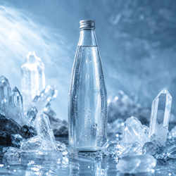

Népszerű ásványvizek
- Kristályos víz
- Tüzes égővíz
- Kevert ásványvíz
- Gyógyító-növényes víz
Ásványvizek képei

Ásványvizek árai
| Ásványvíz | Ár | Várható szállítási időtartam |
|---|---|---|
| Kristályos víz (1.5 l) | 920 Ft | 1-2 nap |
| Tüzes égővíz (0.5 l) | 7500 Ft | 14-21 nap |
| Kevert ásványvíz (0.1 l) | 650 Ft | 3-4 nap |
| Gyógyító-növényes víz (0.25 l) | 45000 Ft | 6-8 hónap |